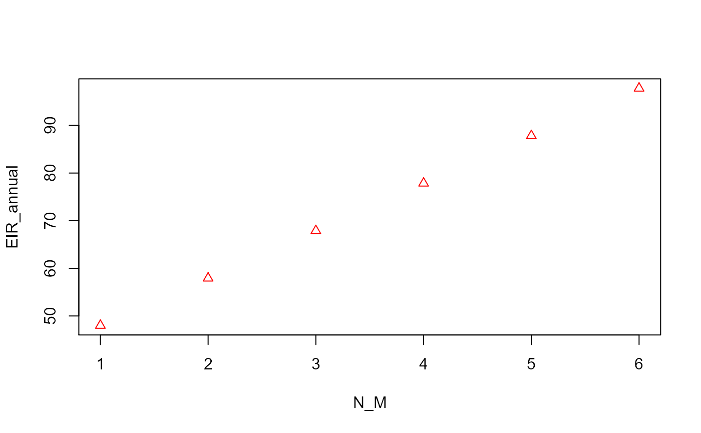
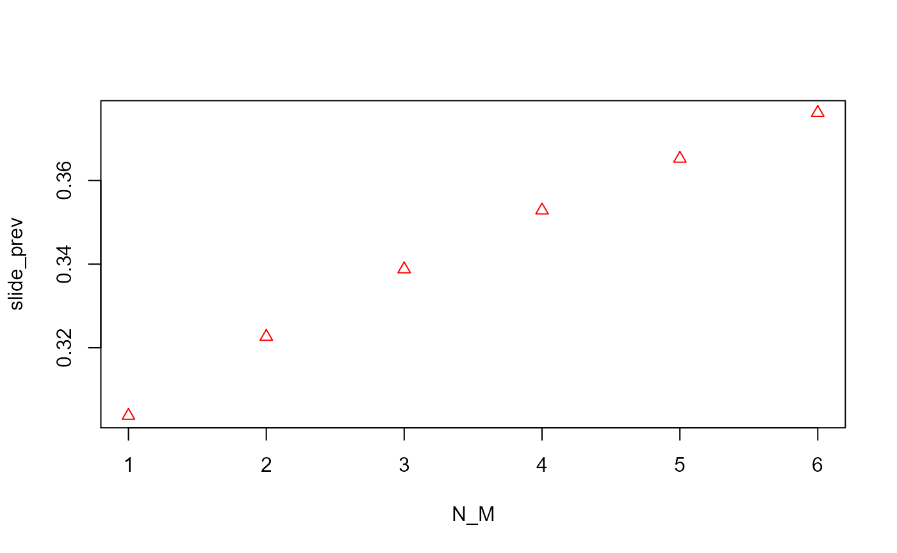

Worked Example 3 - Cohort Setup
E_worked_example03.RmdThis is an example of how to take data output from main population calculations and use it to set up the details of the trial cohort.
First load the package (install it first if necessary as shown in the Installation article:
In this example, the main population data is loaded from an RDS file created by saving the results of running the mainpop() function, as described in Worked Example 2.
mainpop_data <- readRDS(file=url("https://github.com/KeithJF82/vectorpower/raw/master/inst/extdata/mainpop_data.Rds"))The cluster_input_setup() function is used to extract and plot a graph of a list of specific data values from the output, to use as input for cluster creation. The quantity set_n_pt refers to the time point in the results to use (the time points being specified using the time_values quantitity in mainpop()), set_n_int refers to the intervention number to use, benchmark is the output data type to use, and age_start and age_end define the age range to be used when using an age-dependent quantity as the benchmark. For more details, see the documentation for cluster_input_setup(). Here, the annual total EIR is used as the benchmark by setting benchmark = “EIR_annual”. This renders the other quantities listed above unnecessary, as EIR_annual is an invariant quantity.
setup_list1 <- cluster_input_setup(input_list=mainpop_data, set_n_pt=1, set_n_int=1,
benchmark = "EIR_annual", age_start=0.0, age_end=65.0)
In the alternative example below, the prevalence across all ages at the last time point specified (set_n_pt=6) in the simulations where the intervention parameter is zero (set_n_int=1) is used.
setup_list2 <- cluster_input_setup(input_list=mainpop_data, set_n_pt=1, set_n_int=1,
benchmark = "slide_prev", age_start=0.0, age_end=65.0)
Once the input list has been created, a set of clusters can be created using the clusters_create() function. The number of clusters to be created is specified using the parameter n_clusters. The example below shows the creation of a set of clusters which are all controls, as the mean intervention parameter int_mean is set to zero with zero standard deviation int_stdev. The mean and standard deviation of the benchmark parameter must be based on the data used in the input list - this is why the setting up of the input data and the creation of the clusters are separated into two functions, so that a user can view the values in the graph produced by cluster_input_setup(). If setup_list2, where the benchmark is the prevalence rather than the annual EIR, was used instead of setup_list1, the values of benchmark_mean and benchmark_stdev would need to be different.
cluster_list_con <- clusters_create(input_list=setup_list1,n_clusters=10,
benchmark_mean=0.249, benchmark_stdev=0.085, int_mean=0.0, int_stdev=0.0)
The example below shows the creation of a set of intervention clusters where the intervention parameter is always non-zero. In this case, because only two values of the intervention parameter (0.0 and 0.1) were used in the main population calculations, int_stdev can again be set to zero. If a range of values of the intervention parameter above zero were used, a non-zero standard deviation could be used to draw a range of different values from a probability distribution as with the benchmark. (This could lead to an intervention cluster with an intervention parameter value of zero, representing one where the intervention had no effect for whatever reason.)
cluster_list_int <- clusters_create(input_list=setup_list1,n_clusters=10,
benchmark_mean=0.249, benchmark_stdev=0.085,int_mean=0.1, int_stdev=0.0)
As with the main population data, the cluster data can be saved to files for future use.